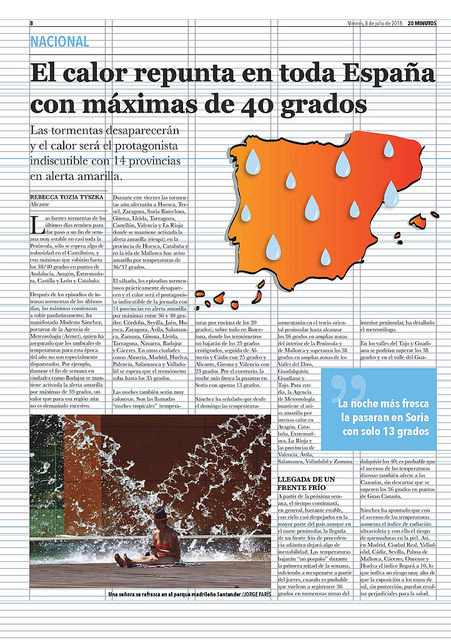

Módulo 1: Introducción al grafismo
A diario, vivimos rodeados de soportes comunicativos y mensajes cargados de información visual, en los que el diseño gráfico está presente, aunque a veces no seamos conscientes de ello. En el desarrollo del curso, trataremos de reflexionar sobre las ventajas que podemos obtener con el buen uso del lenguaje visual, y del diseño gráfico, aplicado al desarrollo de recursos para el aprendizaje.
En los contenidos de los tres módulos, se muestran ejemplos sobre cómo influyen los componentes de la sintaxis visual (signos, estructuras compositivas, colores,...), en la percepción de la información. Y se aportan recomendaciones, sobre cómo usar estos recursos gráficos en la preparación de materiales educativos propios, para que los contenidos educativos resulten claros, legibles, y pregnantes.

Rebecca Tozia Tyszka. Retícula de un periódico (CC BY)

Scribus: Maqueta visualmente tus contenidos educativos por varios autores bajo licencia Creative Commons Reconocimiento-NoComercial-CompartirIgual 4.0 Internacional License.